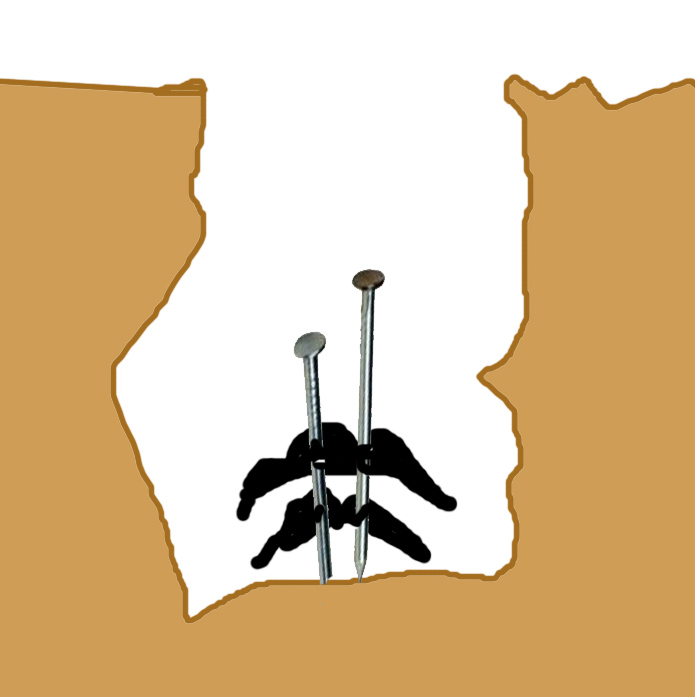

| RYOU |
We are out of New and Old Testaments, we have to REORDER BOTH of them. |
|
We have to nail both Moustaches to bottom of the pit. (don't ask: it's performance art)  |
| 両方 |
both things / both ways
★★★★☆
|
| 両替 する |
make change
★★★☆☆
NOKURI
to make change - i.e. "Do you have change for a dollar?" |
| 両親 |
both parents
★★★☆☆
|
| Meaning | Hint | Radical | |
|---|---|---|---|
| 両 | both | MOUSTACHE |  |
| 画 | a drawing | RICEFIELD | 田 |
Both MOUSTACHES paint a picture of a RICEFIELD. Somehow.
 KANJIDAMAGE
KANJIDAMAGE